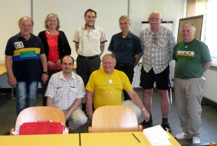

| |
|
|

The World Federation of National Mathematics Competitions is an Affiliated Organization of the
International Commission for Mathematical Instruction (ICMI).
Founded at a meeting in Adelaide in 1984 (at ICME 5) it has a Constitution which was
approved in 1996 at its meeting in
Sevilla (at ICME-8) under the Presidency of Ron Dunkley,
amended in 2004 and again in 2008 (at present the 2004 version is
still on the web site).
It also has a Policy Document, approved at its 2002 meeting, defining its interests
to be wider that solely mathematics
competitions themselves, but also embracing a
number of other activities normally related to competitions and having various
roles in enriching the learning experience of students.
The Federation aims to provide a focal point for those interested in, and concerned with,
conducting national
mathematics competitions and related activitiies for the purpose of
stimulating the learning of mathematics.
Its objectives include:
- Serving as a resource for the exchange of information and ideas
on mathematics competitions
and related activities through publications and conferences.
- Assisting with the development and improvement of mathematics competitions
and related activities.
- Increasing public awareness of the role of mathematics competitions
and related ativities in
the education of all students and assuring that the importance
of that role is properly recognised in academic circles.
- Creating and enhancing professional links between mathematicians
involved in competitions
and related activities around the world.
It administers a number of activities, including:
- The Journal Mathematics Competitions
- An international conference every four years. Previous
conferences have been held (or
are planned to be held) in:
- WFNMC-1: Waterloo, Canada (1990)
- WFNMC-2: Pravets, Bulgaria (1994)
- WFNMC-3: ZhongShan, China (1998)
- WFNMC-4: Melbourne, Australia (2002)
- WFNMC-5: Cambridge, UK (2006)
- WFNMC-6: Riga, Latvia (2010)
- WFNMC-7: Barranquilla, Colombia (2014)
- WFNMC-8: Graz, Austria (2018)
- WFNMC-9: Sofia, Bulgaria (2022)
- WFNMC-10: Kuala Lumpur, Malaysia (2026)
- Paul Erdös Awards for mathematicians
prominent on an international or national scale in mathematical enrichment activites.
It consists of the following committees:
WFNMC EXECUTIVE
- President: Robert Geretschläger, Graz, AUSTRIA.
- Senior Vice-President (and Chairman, Program Committee):
Krzysztof Ciesielski, Krakow, POLAND.
- Vice-President: Sergey Dorichenko,
Moscow, RUSSIA.
- Vice-President: Meike Akveld, Zurich, SWITZERLAND.
- Secretary: David Crawford, Leicester, UK.
- Immediate Past President (and Chairman, Awards Committee): Kiril
Bankov, Sofia, BULGARIA.
- Editor: Maria Losada, Bogota, COLOMBIA.
- Treasurer: Peter Taylor, Canberra, AUSTRALIA.
Past Presidents

The Executive in Semriach, July 2018. Back row from left Alexander, Maria, Robert, Kiril, Peter, David, front, Sergey and Krzrysztof.
WFNMC REGIONAL REPRESENTATIVES
- Africa: Liam Baker, Stellenboch, South Africa.
- Asia: M. Suhaimi Ramli, Kuala Lumpur, MALAYSIA.
- Europe (1): Borislav Lasarov, Sofia, BULGARIA.
- Europe (2): Jaroslav Svrcek, Olomouc, CZECH REPUBLIC.
- North America:
Alexander Soifer, Colorado Springs, USA.
- Oceania: Peter Taylor, Canberra, AUSTRALIA.
- South America: Maria Falk de Losada, Bogota, COLOMBIA.
WFNMC PROGRAM COMMITTEE
The following Committee develops policy for programs at WFNMC Congresses.
- Chairman: Krzysztof Ciesielski,
Krakow, POLAND.
- Geza Kos, Budapest, HUNGARY
- Alexander Soifer, Colorado Springs, USA.
- Yahya Tabesh, Tehran, IRAN.
- Iliana Tsvetkova, Sofia, BULGARIA.
WFNMC AWARDS COMMITTEE
- Chair: Kiril
Bankov, Sofia, BULGARIA.
- Maria Falk de Losada, Bogota, COLOMBIA.
- Romualdas Kasuba, Vilnius, LITHUANIA.
- Alexander Soifer, Colorado Springs, USA.
- Peter Taylor, Canberra, AUSTRALIA.
EDITORIAL BOARD
Maria Losada, Bogota, Colombia,
Krzysztof Ciesielski, Sergey Dorichenko, Alexander Soifer, Jaroslav Svrcek, Peter Taylor.
PRESIDENTS OF WFNMC
- 1984 to 1994 Peter O'Halloran, AUSTRALIA
- 1994 to 1996 Blagovest Sendov, BULGARIA
- 1996 to 2000 Ronald Dunkley, CANADA
- 2000 to 2004 Peter Taylor, AUSTRALIA
- 2004 to 2008 Petar Kenderov, BULGARIA
- 2008 to 2012 Maria Falk de Losada, COLOMBIA
- 2012 to 2018 Alexander Soifer, USA
- 2018 to 2022 Kiril Bankov, BULGARIA
- 2022 to 2026 Robert Geretschlaeger, AUSTRIA
|
|